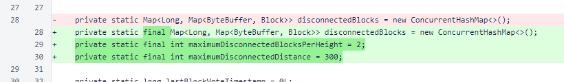
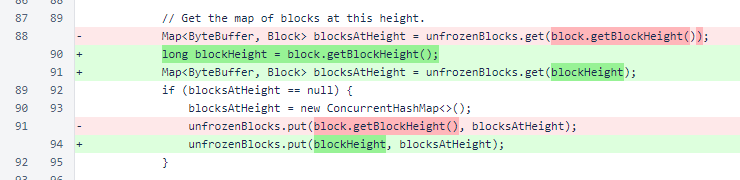
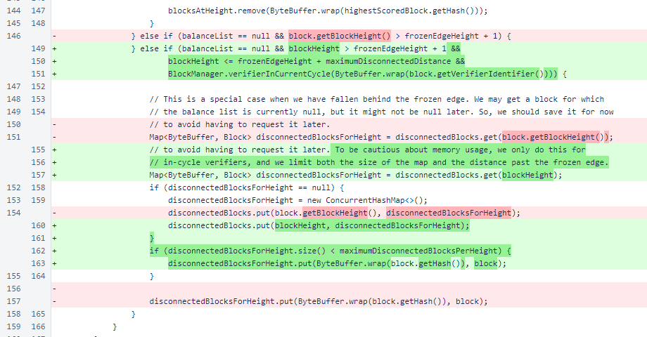

Nyzo version 582 (commit on GitHub) corrects a memory issue for disconnected blocks in the UnfrozenBlockManager.
This version affects the verifier. This is a small but exceptionally important update. It discloses a vulnerability that can be exploited from a single location to overwhelm the memory of any verifier.
The following two paragraphs are taken, verbatim, from the release notes for version 572. They are just as relevant to this version as they were to version 572.
The openness of the Nyzo verifier, with its willingness to accept information on incoming connections, makes it especially susceptible to resource-consumption attacks. In the past, various potential attacks have been found by members of the community. The NicknameManager issue, addressed in version 500, resulted in a ∩75,000 bounty. The signature-buffer issue, addressed in version 503, resulted in a ∩225,000 bounty. The TIME_WAIT issue, addressed in version 539, resulted in a ∩30,000 bounty.
We will not recommend a specific bounty amount for this issue. We encourage the cycle to provide a bounty that appropriately acknowledges the value that report of this issue provides to the community. The fixes in this build eliminate a vulnerability that, if exploited correctly, could have resulted in a cycle stall, tremendous hassle for operators of verifiers, and loss of verification positions in the cycle.
The reporter of this issue has provided the following address for receiving a bounty:
The actual code changes in this update are small. Previously, the disconnected-blocks map in UnfrozenBlockManager was unlimited in size. It would accept blocks from any verifier, and it would accept blocks at any height in the future. An attacker, even one without any verifiers in the cycle, could send blocks marked far in the future to a verifier. These blocks would accumulate until the verifier ran out of memory.
This version adds three protections to limit memory usage. Disconnected blocks are now only accepted from in-cycle verifiers. Blocks are only accepted 300 blocks past the frozen edge. Only two disconnected blocks are stored at each height.
In UnfrozenBlockManager, the disconnectedBlocks map was marked as final. The map is modified, but it is never changed.
The maximumDisconnectedBlocksPerHeight constant indicates the maximum number of blocks that will be stored at a height. The maximumDisconnectedDistance constant indicates the maximum distance past the frozen edge for which a disconnected block will be stored.
In UnfrozenBlockManager.registerBlock(), the block height of the block is now stored in a local variable. This was changed to improve code readability.
Later in UnfrozenBlockManager.registerBlock(), the condition for accepting blocks without balance lists has two new considerations. Only blocks within maximumDisconnectedDistance are stored, and only blocks from in-cycle verifiers are stored.
When the disconnectedBlocksForHeight map is retrieved, its size is checked. The block is only added if the current size is less than maximumDisconnectedBlocksPerHeight.
There are numerous improvements that could be made to this to further conserve memory and use memory more wisely. Cycle positions could be considered, and block sizes relative to recent blocks could be considered. These improvements will be introduced as an NTTP, and they will be implemented if the cycle deems their implementation worthwhile.